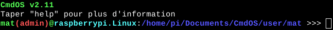

L'entrée utilisateur est l'interface que vous avez quand vous vous connectez. Elle ressemble à cela :
Elle est organisée sous la forme suivante sans le mode admin: nom_d'_utilisateur@nom_de_l'_appareil.nom_du_système:adresse_de_travail >>>
Elle est organisée sous la forme suivante avec le mode admin: nom_d'_utilisateur(admin)@nom_de_l'_appareil.nom_du_système:adresse_de_travail >>>